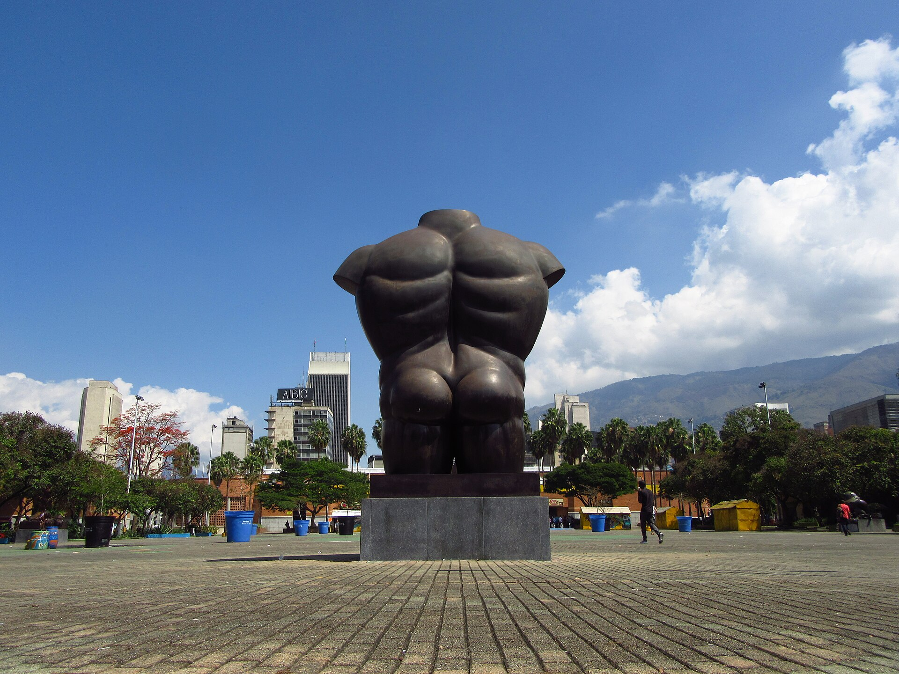
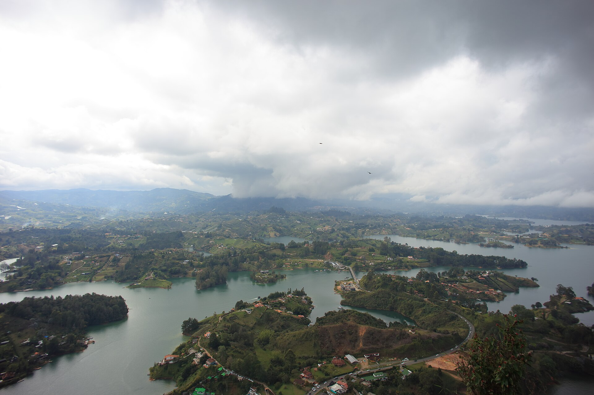

<!DOCTYPE html>
<html lang="es">
<head>
<meta charset="UTF-8">
<title>Informe de Turismo 16:9</title>
<script src="https://cdn.jsdelivr.net/npm/echarts@5.5.1/dist/echarts.min.js"></script>
<link href="https://fonts.googleapis.com/css2?family=Montserrat:wght@400;600;700;800&display=swap" rel="stylesheet">
<!-- SKILL diagramacion v2 (16:9 TEC): paleta navy #072B60, azul #0872B9, amarillo #FFBF18, teal #109A9A, panel #F1F4F7; Montserrat como repliegue de Century Gothic -->
<style>
:root{--navy:#072B60;--navy2:#071B3B;--blue:#0872B9;--blue2:#00509D;--yellow:#FFBF18;--teal:#109A9A;--paper:#fff;--panel:#F1F4F7;--panel2:#E9F1F8;--text:#1E2B40;--muted:#607086;--line:#D5DFE9;--foot:#962D46}
*{box-sizing:border-box}
body{font-family:'Montserrat',sans-serif;color:var(--text);margin:0;background:#fff;font-size:11pt;line-height:1.35}
@page{size:960pt 540pt;margin:0}
.pagina{width:960pt;height:540pt;page-break-after:always;position:relative;overflow:hidden}
#libro>.pagina:not(:first-child){break-before:page}
#libro>.flujo{break-before:page}
.aviso{break-inside:avoid}
.mitad{display:flex;width:100%;height:100%}
.flujo{width:960pt;position:relative;padding:34pt 48pt;page-break-after:always}
.flujo .chart{height:340pt}
.fotoL{width:480pt;height:100%;object-fit:cover}
.colR{width:480pt;height:100%;background:var(--navy);color:#fff;position:relative;padding:34pt 40pt}
.banda{background:var(--yellow);color:var(--navy);font-weight:800;padding:10pt 16pt;margin-top:18pt;font-size:17pt}
.numsec{font-size:64pt;font-weight:800;margin:0}
.rotulo{font-size:10pt;letter-spacing:3pt;color:#fff;opacity:.85}
.reglaVino{position:absolute;bottom:0;left:0;width:100%;height:5pt;background:var(--foot)}
h1.port{font-size:40pt;margin:110pt 0 0;line-height:1.1;font-weight:800}
.sub{font-size:13pt;color:#dbe4ef;margin-top:10pt}
.contenido{padding:40pt 48pt}
h2.tit{color:var(--navy);font-size:26pt;margin:0 0 4pt}
h2.tit .n{background:var(--yellow);color:var(--navy);padding:2pt 10pt;border-radius:6pt;margin-right:8pt}
.sub2{color:var(--blue);font-weight:700;font-size:16pt;margin:0 0 10pt}
.gridKPI{display:flex;gap:16pt;margin-top:14pt}
.kpi{background:var(--panel);border-radius:8pt;padding:14pt 16pt;flex:1}
.kpi .v{font-size:30pt;font-weight:800;color:var(--navy)}
.kpi .l{font-size:10.5pt;color:var(--muted)}
.kpi .s{font-size:9.5pt;color:var(--muted)}
.bul{font-size:11.5pt;margin:7pt 0}
.bul b{color:var(--navy)}
.lec{border-left:5pt solid var(--teal);background:var(--panel);padding:8pt 12pt;margin:7pt 0;font-size:11pt}
table.tabla{width:100%;border-collapse:collapse;font-size:10.5pt;margin:8pt 0}
table.tabla th{background:var(--blue);color:#fff;padding:5pt 8pt;text-align:left}
table.tabla td{padding:4pt 8px;border-bottom:1px solid var(--line)}
table.tabla{width:100%;border-collapse:collapse;font-size:10.5pt;margin:8pt 0}
table.tabla th{background:var(--blue);color:#fff;padding:5pt 8pt;text-align:left}
table.tabla td{padding:4pt 8px;border-bottom:1px solid var(--line)}
table.tabla td.num{text-align:right}
table.tabla tr.total td{background:var(--blue2);color:#fff;font-weight:800}
table.tabla tr{break-inside:avoid}
.src{font-size:9pt;font-style:italic;color:var(--muted)}
.chart{width:100%;height:300pt}
.cols{display:flex;gap:22pt}
.c60{width:60%}.c40{width:40%}
.fuentePie{position:absolute;bottom:14pt;left:48pt;right:48pt;font-size:9pt;font-style:italic;color:var(--muted)}
.logos{position:absolute;top:18pt;right:22pt;height:40pt}
.coverLogo{height:44pt;margin-bottom:6pt}
.indice li{margin:9pt 0;font-size:14pt;font-weight:700;color:var(--text);list-style:none}
.indice .n{color:var(--yellow);font-weight:800;margin-right:10pt}
.metodo td:first-child{font-weight:800;color:var(--navy);white-space:nowrap}
.gracias{font-size:54pt;font-weight:800;color:#fff;text-align:center;margin-top:150pt}
.aviso{background:#fff;border-radius:8pt;margin:0 48pt;padding:12pt 16pt;font-size:9.5pt}
</style>
</head>
<body>
<div id="libro"></div>
<script>
const PAL=['#0872B9','#109A9A','#FFBF18','#4472C4','#8AAEE0','#264478'];
const FOTO={tendencias:'cover_medellin.jpg',receptivo:'botero.jpg',emisores:'st_emisores.jpg',salidas:'salidas.jpg',conectividad:'conectividad.jpg',marca:'cocora.jpg',visitante:'cartagena.jpg',aereo:'metrocable.jpg',gestion:'bogota.jpg',territorio:'guatape.jpg'};
const J=n=>fetch('data/'+n+'.json').then(r=>{if(!r.ok)throw n;return r.json();});
const esc=s=>String(s==null?'':s).replace(/[&<>"]/g,c=>({'&':'&amp;','<':'&lt;','>':'&gt;','"':'&quot;'}[c]));
const fmt=n=>Number(n||0).toLocaleString('es-CO',{maximumFractionDigits:0});
function modoGrafico(g){
  const vs=(g.values||[]).map(Number);
  if(vs.some(v=>v<0))return 'valores';
  const tot=vs.reduce((a,b)=>a+b,0);
  if(tot>0.95&&tot<1.05)return 'shares100';
  return 'conteos';
}
function fmtV(v,modo){return modo==='shares100'?(100*v).toLocaleString('es-CO',{maximumFractionDigits:1})+'%':(Math.abs(v)<10&&v%1!==0?v.toLocaleString('es-CO',{maximumFractionDigits:3}):fmt(v));}
function datatable(g){
  const modo=modoGrafico(g);
  if(modo==='valores'){
    const rows=g.labels.map((l,k)=>`<tr><td>${esc(l)}</td><td class="num">${fmtV(Number(g.values[k]),modo)}</td></tr>`).join('');
    return `<table class="tabla"><tr><th>Categoría</th><th>Valor</th></tr>${rows}</table>`;
  }
  const tot=g.values.reduce((a,b)=>a+Number(b),0)||1;
  const rows=g.labels.map((l,k)=>{const v=Number(g.values[k]);const vv=modo==='shares100'?v*100:v;return `<tr><td>${esc(l)}</td><td class="num">${fmtV(v,modo)}</td><td class="num">${(100*vv/(modo==='shares100'?100:tot)).toFixed(1)}%</td></tr>`;}).join('');
  const trow=modo==='shares100'?`<tr class="total"><td>Total</td><td class="num">100,0%</td><td class="num">100,0%</td></tr>`:`<tr class="total"><td>Total</td><td class="num">${fmt(tot)}</td><td class="num">100,0%</td></tr>`;
  return `<table class="tabla"><tr><th>Categoría</th><th>Valor</th><th>Part. %</th></tr>${rows}${trow}</table>`;
}
(async()=>{
try{
const [inf,kpis] = await Promise.all([J('informe_llm'),J('kpis').then(a=>a[0]).catch(()=>({}))]);
let H='';
/* T01 portada */
H+=`<div class="pagina"><div class="mitad">`
+`<div class="colR"><div class="rotulo">INFORME DE TURISMO · MEDELLÍN Y COLOMBIA</div>`
+`<h1 class="port">Turismo en<br>Medellín y<br>Colombia</h1>`
+`<div class="banda">CORTE: ${esc((inf.corte||'').toUpperCase())}</div>`
+`<p class="sub">Redacción LLM verificada contra el warehouse · I.U. Colegio Mayor de Antioquia</p>`
+`<div class="reglaVino"></div></div></div></div>`;
/* T02 índice */
H+=`<div class="pagina"><div class="mitad">`
+`<div class="colR" style="background:#fff;color:var(--navy)"><h2 class="tit">CONTENIDO</h2><ol class="indice">`
+inf.secciones.map((s,i)=>`<li><span class="n">${String(i+1).padStart(2,'0')}</span>${esc(s.titulo)}</li>`).join('')
+`</ol><p class="src">Cifras provisionales sujetas a ajuste.</p><div class="reglaVino"></div></div></div></div>`;
/* T04 síntesis KPI */
const kpi=(v,l,s)=>`<div class="kpi"><div class="v">${v}</div><div class="l">${l}</div><div class="s">${s}</div></div>`;
H+=`<div class="pagina"><div class="contenido"><h2 class="tit">Síntesis transversal</h2>`
+`<p class="sub2">Indicadores seleccionados; períodos y universos no son equivalentes entre tarjetas.</p><div class="gridKPI">`
+kpi(fmt(kpis.med_ult3m_total),'Visitantes Medellín (trim. móvil)','YoY '+(kpis.med_ult3m_yoy*100).toFixed(1)+'%')
+kpi(fmt(kpis.occ_med_ult)+'%','Ocupación hotelera',kpis.occ_med_periodo||'')
+kpi(fmt(kpis.aereo_mde_eoh_ult3m),'Pasajeros MDE/EOH (trim. móvil)','Aerocivil')
+kpi(fmt(kpis.menciones),'Menciones digitales','Sent. neto '+(Number(kpis.sentimiento_neto)||0))
+`</div><p class="src">Fuente: warehouse ETL, corte ${esc(inf.corte||'')}.</p></div><div class="reglaVino"></div></div>`;
/* Secciones: T03 separador + contenido */
inf.secciones.forEach((s,i)=>{
  const foto=FOTO[s.id]||'cover_medellin.jpg';
  const n=String(i+1).padStart(2,'0');
  H+=`<div class="pagina"><div class="mitad">`
  +`<div class="colR"><div class="rotulo">INFORME DE TURISMO</div><p class="numsec">${n}</p>`
  +`<div class="banda">${esc(s.titulo)}</div><div class="reglaVino"></div></div></div></div>`;
  const g=s.grafico||{};
  const ok=g.labels&&g.values&&g.labels.length===g.values.length&&g.labels.length;
  const esDona=(s.id==='marca');
  H+=`<div class="flujo"><h2 class="tit"><span class="n">${n}</span>${esc(s.titulo)}</h2>`
  +s.bullets.map(b=>`<p class="bul">${esc(b.texto)}<br><span class="src">Fuente: ${esc(b.fuente||'—')}</span></p>`).join('')
  +(s.analisis||[]).map(b=>`<p class="lec"><b>Lectura · </b>${esc(b.texto)}<br><span class="src">Fuente: ${esc(b.fuente||'—')}</span></p>`).join('')
  +`<p class="fuentePie">Fuente: warehouse ETL · Corte ${esc(inf.corte||'')}</p><div class="reglaVino"></div></div>`;
  if(ok)H+=`<div class="flujo"><h2 class="tit"><span class="n">${n}</span>${esc(s.titulo)}: datos</h2>`
  +`<p class="sub2">${esc(g.titulo||'')}</p><div class="cols"><div class="c60"><div class="chart" id="cg${i}" style="height:320pt"></div></div>`
  +`<div class="c40" style="overflow:hidden">${datatable(g)}</div></div>`
  +`<p class="fuentePie">Fuente: warehouse ETL · Corte ${esc(inf.corte||'')}</p><div class="reglaVino"></div></div>`;
  window.__charts=window.__charts||[];
  if(ok)window.__charts.push({id:'cg'+i,graf:g,dona:esDona});
});
/* T10 método */
H+=`<div class="pagina"><div class="contenido"><h2 class="tit">Método y control de calidad</h2>`
+`<p class="sub2">Toda cifra se verifica contra el warehouse; la cifra sin fuente se rechaza y no se publica.</p>`
+`<table class="tabla metodo"><tr><td>01</td><td>Unidades</td><td>No se mezclan conteos, COP, USD y puntos sin declarar unidad.</td></tr>`
+`<tr><td>02</td><td>Porcentajes</td><td>Toda participación nombra su denominador; redondeo a 1 decimal.</td></tr>`
+`<tr><td>03</td><td>Cortes</td><td>Año cerrado vs ventana móvil vs YTD se etiquetan aparte.</td></tr>`
+`<tr><td>04</td><td>Fuentes</td><td>Primaria + corte al pie; provisionalidad reconocida.</td></tr>`
+`<tr><td>05</td><td>Fotos</td><td>Bancos libres Openverse/Wikimedia con atribución.</td></tr></table>`
+`<p class="fuentePie"> Pipeline: ETL Bureau + Groq/Gemini con validación anti-alucinación + cuarentena de rechazos.</p><div class="reglaVino"></div></div></div>`;
/* T11 cierre */
H+=`<div class="pagina"><div class="mitad">`
+`<div class="colR"><div class="rotulo">INFORME DE TURISMO · ${esc((inf.corte||'').toUpperCase())}</div>`
+`<p class="gracias">GRACIAS</p>`
+`<div class="aviso"><b>AVISO DE USO.</b> Documento informativo de la I.U. Colegio Mayor de Antioquia y el Bureau. Cifras provisionales sujetas a ajuste; uso académico/institucional. Fotos de bancos libres con atribución.</div>`
+`<div class="reglaVino"></div></div></div></div>`;
document.getElementById('libro').innerHTML=H;
const PAL=['#0872B9','#109A9A','#FFBF18','#4472C4','#8AAEE0','#264478'];
(window.__charts||[]).forEach((c,k)=>{
  const e=echarts.init(document.getElementById(c.id),null,{renderer:'canvas'});
  const neg=c.graf.values.some(v=>Number(v)<0);
  if(c.dona&&!neg){
    e.setOption({tooltip:{},series:[{type:'pie',radius:['42%','62%'],data:c.graf.labels.map((l,j)=>({name:l,value:c.graf.values[j]})),label:{fontSize:11,formatter:'{b}\n{d}%'}}],animation:false});
  }else{
    e.setOption({tooltip:{},grid:{left:135},xAxis:{},yAxis:{type:'category',data:c.graf.labels.map(esc),axisLabel:{fontSize:12}},series:[{type:'bar',data:c.graf.values.map(Number).map((v,j)=>({value:v,itemStyle:{color:v<0?'#FF0000':PAL[(k+j)%PAL.length]}})),label:{show:true,position:'right',fontSize:11,fontWeight:700}}],animation:false});
  }
});
}catch(e){document.body.insertAdjacentHTML('beforeend','<p style="color:red">Sin informe: '+e+'</p>');}
window.__REPORT_READY__=true;
})();
</script>
</body>
</html>
